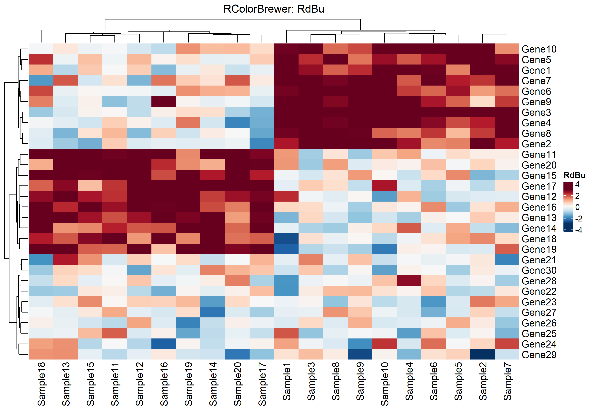
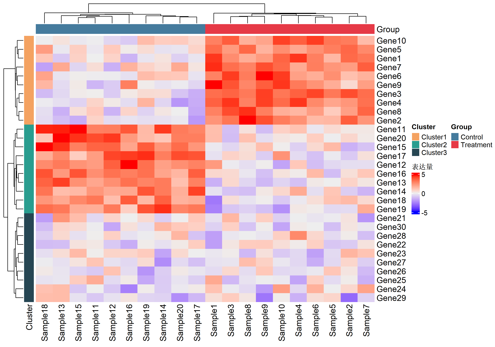
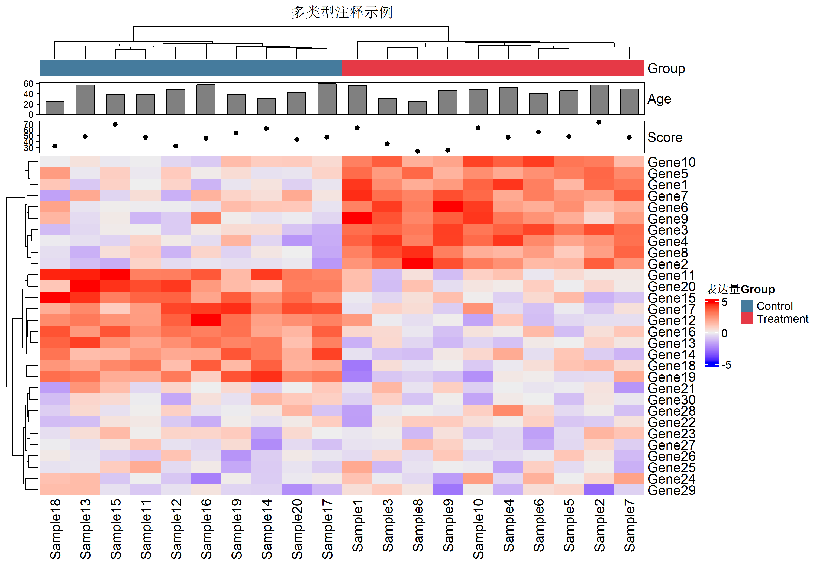
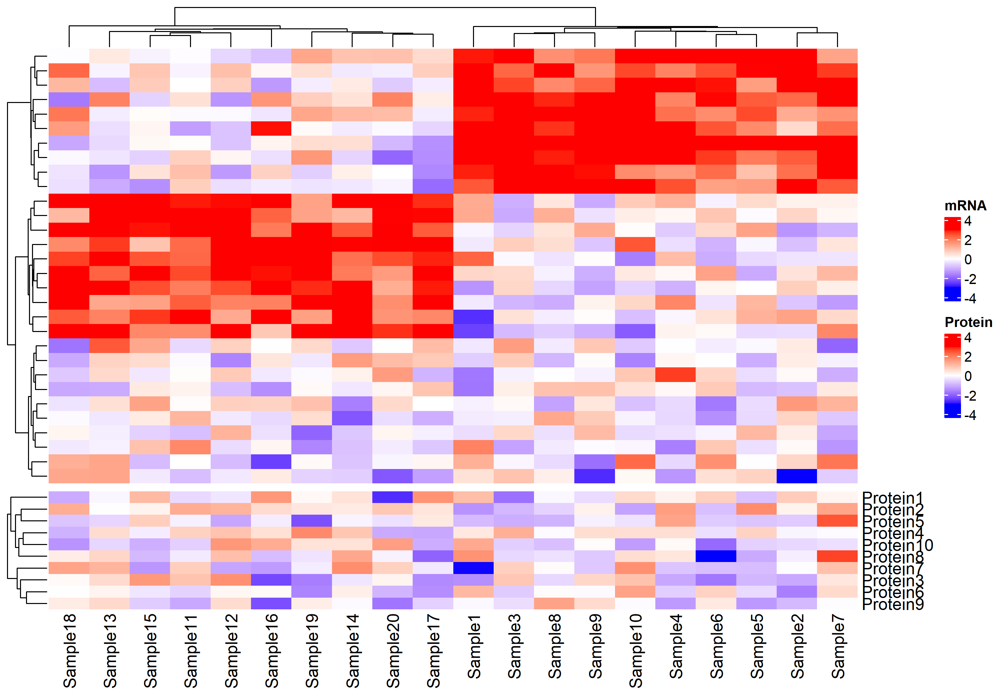
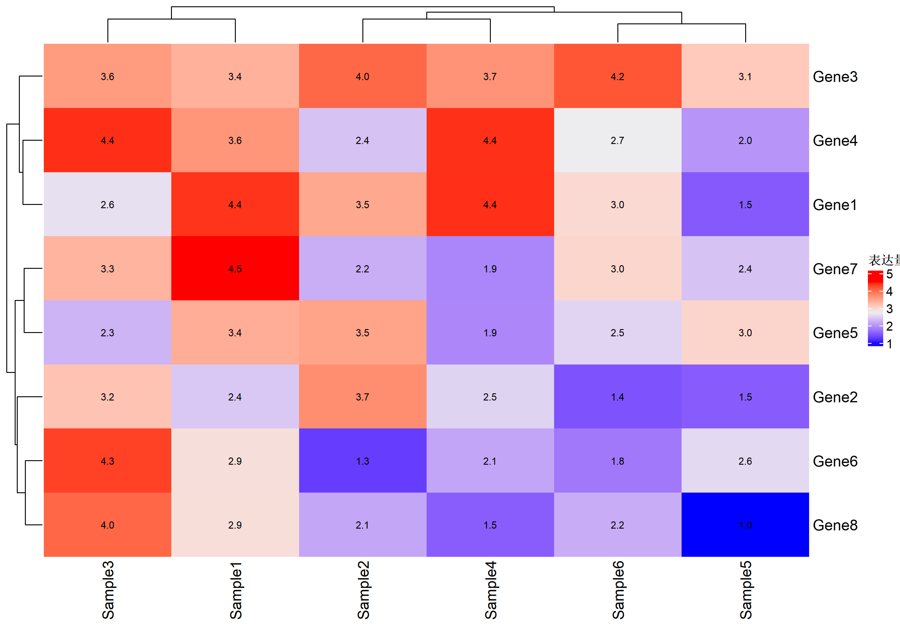
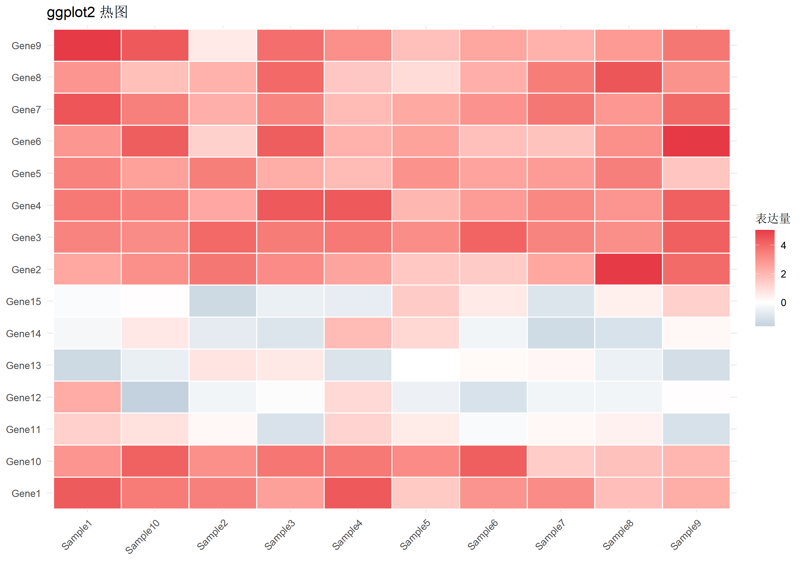
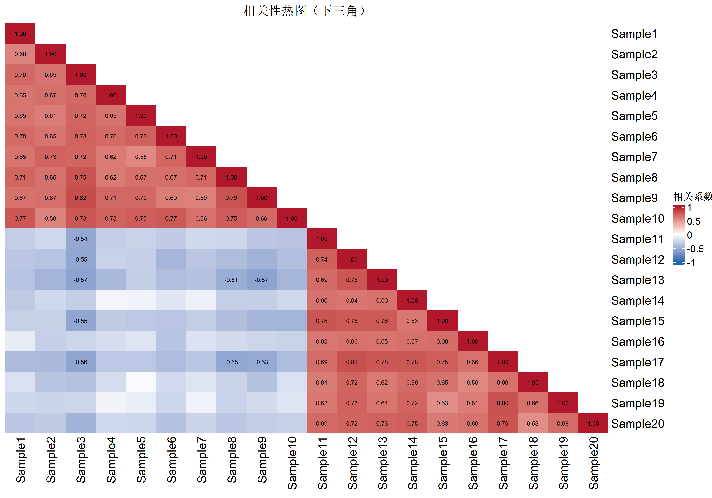

library(ComplexHeatmap) # 最强大的热图包
library(circlize) # 配色工具
library(RColorBrewer) # 经典配色
library(viridis) # 现代配色
# 模拟基因表达数据：30个基因 × 20个样本
set.seed(42)
mat <- matrix(rnorm(600), nrow = 30, ncol = 20)
rownames(mat) <- paste0("Gene", 1:30)
colnames(mat) <- paste0("Sample", 1:20)
# 添加一些模式（模拟差异表达）
mat[1:10, 1:10] <- mat[1:10, 1:10] + 3 # 组1高表达
mat[11:20, 11:20] <- mat[11:20, 11:20] + 3 # 组2高表达热图绑制完全指南
可视化
热图
ComplexHeatmap
热图是展示矩阵数据的强大工具，广泛用于基因表达、相关性分析、聚类结果展示等场景。本文从基础到高级，全面介绍 R 语言热图绑制。
热图包概览
| 包名 | 特点 | 适用场景 |
|---|---|---|
pheatmap |
简单易用，自动聚类 | 快速出图、基础需求 |
ComplexHeatmap |
功能最强大，可高度定制 | 复杂注释、多热图组合 |
heatmaply |
交互式热图 | 网页展示、数据探索 |
ggplot2 + geom_tile |
与ggplot生态兼容 | 简单热图、自定义样式 |
数据准备
基础热图
ComplexHeatmap 基础
# 最简单的热图
Heatmap(mat, name = "表达量")
关闭聚类
Heatmap(mat,
name = "表达量",
cluster_rows = FALSE, # 关闭行聚类
cluster_columns = FALSE) # 关闭列聚类
配色方案
配色是热图最重要的元素之一。
连续型配色
# 蓝-白-红（经典差异表达配色）
col_bwr <- colorRamp2(c(-3, 0, 3), c("blue", "white", "red"))
# 紫-白-橙（对比更强）
col_pwo <- colorRamp2(c(-3, 0, 3), c("purple", "white", "orange"))
# viridis（色盲友好）
col_viridis <- colorRamp2(seq(-3, 3, length = 100), viridis(100))
# 对比展示
p1 <- Heatmap(mat, name = "蓝白红", col = col_bwr,
show_row_names = FALSE, show_column_names = FALSE)
p2 <- Heatmap(mat, name = "viridis", col = col_viridis,
show_row_names = FALSE, show_column_names = FALSE)
p1 + p2
预设配色方案
# RColorBrewer 调色板
display.brewer.all(type = "div") # 查看分歧型调色板
# 使用 RColorBrewer
col_rdbu <- colorRamp2(seq(-3, 3, length = 11),
rev(brewer.pal(11, "RdBu")))
Heatmap(mat, name = "RdBu", col = col_rdbu,
column_title = "RColorBrewer: RdBu")
聚类设置
聚类方法
# 不同聚类方法对比
Heatmap(mat, name = "ward.D2",
clustering_method_rows = "ward.D2", # Ward法
clustering_method_columns = "complete", # 完全连接法
column_title = "Ward.D2 行聚类 + Complete 列聚类")
常用聚类方法：
ward.D2：方差最小化，产生紧凑聚类complete：最远邻法，产生紧凑聚类average：平均连接法，折中选择single：最近邻法，易产生链式聚类
距离度量
# 使用相关距离（基因表达常用）
Heatmap(mat, name = "相关距离",
clustering_distance_rows = "pearson", # 皮尔逊相关
clustering_distance_columns = "spearman", # 斯皮尔曼相关
column_title = "基于相关性的聚类")
距离选项：euclidean, pearson, spearman, kendall, manhattan
树状图美化
Heatmap(mat, name = "表达量",
row_dend_width = unit(2, "cm"), # 行树状图宽度
column_dend_height = unit(2, "cm"), # 列树状图高度
row_dend_gp = gpar(col = "#4f46e5"), # 树状图颜色
column_dend_gp = gpar(col = "#ef4444", lwd = 2))
行列注释
注释是 ComplexHeatmap 最强大的功能。
简单注释
# 样本分组注释
sample_group <- rep(c("Treatment", "Control"), each = 10)
gene_cluster <- rep(c("Cluster1", "Cluster2", "Cluster3"), each = 10)
# 顶部注释
top_anno <- HeatmapAnnotation(
Group = sample_group,
col = list(Group = c("Treatment" = "#e63946", "Control" = "#457b9d"))
)
# 左侧注释
left_anno <- rowAnnotation(
Cluster = gene_cluster,
col = list(Cluster = c("Cluster1" = "#f4a261",
"Cluster2" = "#2a9d8f",
"Cluster3" = "#264653"))
)
Heatmap(mat, name = "表达量",
top_annotation = top_anno,
left_annotation = left_anno)
多类型注释
# 丰富的注释类型
set.seed(42)
top_anno <- HeatmapAnnotation(
# 分类变量
Group = sample_group,
# 连续变量（条形图）
Age = anno_barplot(runif(20, 20, 60), height = unit(1, "cm")),
# 连续变量（点图）
Score = anno_points(rnorm(20, 50, 10)),
# 自定义颜色
col = list(Group = c("Treatment" = "#e63946", "Control" = "#457b9d")),
# 间距
gap = unit(2, "mm")
)
Heatmap(mat, name = "表达量",
top_annotation = top_anno,
column_title = "多类型注释示例")
行注释（右侧）
# 基因功能注释
pathway <- sample(c("Metabolism", "Signaling", "Cell Cycle"), 30, replace = TRUE)
log2fc <- rnorm(30, 0, 2)
right_anno <- rowAnnotation(
Pathway = pathway,
Log2FC = anno_barplot(log2fc,
gp = gpar(fill = ifelse(log2fc > 0, "#e63946", "#457b9d")),
width = unit(2, "cm")),
col = list(Pathway = c("Metabolism" = "#f4a261",
"Signaling" = "#2a9d8f",
"Cell Cycle" = "#e9c46a"))
)
Heatmap(mat, name = "表达量",
right_annotation = right_anno,
show_row_names = FALSE)
分割热图
按聚类分割
Heatmap(mat, name = "表达量",
row_split = 3, # 行分成3组
column_split = 2, # 列分成2组
row_title = "基因组 %s",
column_title = "样本组 %s")
按变量分割
Heatmap(mat, name = "表达量",
row_split = gene_cluster,
column_split = sample_group,
row_gap = unit(3, "mm"),
column_gap = unit(3, "mm"))
热图组合
ComplexHeatmap 支持多个热图的灵活组合。
# 准备第二个数据
mat2 <- matrix(rnorm(150), nrow = 30, ncol = 5)
colnames(mat2) <- paste0("Feature", 1:5)
rownames(mat2) <- rownames(mat)
# 水平组合
ht1 <- Heatmap(mat, name = "表达量", col = col_bwr,
show_column_names = FALSE, width = unit(8, "cm"))
ht2 <- Heatmap(mat2, name = "特征", col = viridis(100),
width = unit(3, "cm"))
ht1 + ht2 # 使用 + 水平组合
垂直组合
mat3 <- matrix(rnorm(200), nrow = 10, ncol = 20)
rownames(mat3) <- paste0("Protein", 1:10)
colnames(mat3) <- colnames(mat)
ht_main <- Heatmap(mat, name = "mRNA", col = col_bwr,
show_row_names = FALSE)
ht_protein <- Heatmap(mat3, name = "Protein", col = col_bwr,
height = unit(3, "cm"))
ht_main %v% ht_protein # 使用 %v% 垂直组合
文字与标签
行列名样式
Heatmap(mat[1:15, 1:10], name = "表达量",
# 行名设置
row_names_side = "left", # 行名位置
row_names_gp = gpar(fontsize = 10, # 字体大小
fontface = "italic", # 斜体
col = "#333333"),
# 列名设置
column_names_side = "top",
column_names_rot = 45, # 旋转角度
column_names_gp = gpar(fontsize = 9))
在单元格内显示数值
small_mat <- mat[1:8, 1:6]
Heatmap(small_mat, name = "表达量",
# 显示数值
cell_fun = function(j, i, x, y, width, height, fill) {
grid.text(sprintf("%.1f", small_mat[i, j]), x, y,
gp = gpar(fontsize = 8, col = "black"))
})
只显示显著值
# 只在 |值| > 2 时显示
Heatmap(small_mat, name = "表达量",
cell_fun = function(j, i, x, y, width, height, fill) {
val <- small_mat[i, j]
if (abs(val) > 2) {
grid.text(sprintf("%.1f", val), x, y,
gp = gpar(fontsize = 8,
col = ifelse(abs(val) > 2.5, "white", "black"),
fontface = "bold"))
}
})
图例定制
Heatmap(mat, name = "表达量", col = col_bwr,
# 图例设置
heatmap_legend_param = list(
title = "Log2 表达量",
title_position = "topleft",
legend_height = unit(4, "cm"),
labels_gp = gpar(fontsize = 10),
title_gp = gpar(fontsize = 12, fontface = "bold"),
at = c(-3, 0, 3), # 刻度位置
labels = c("低", "中", "高") # 刻度标签
),
show_row_names = FALSE,
show_column_names = FALSE)
pheatmap 快速出图
如果只需要快速出图，pheatmap 更简洁：
library(pheatmap)
# 一行代码快速热图
pheatmap(mat,
color = colorRampPalette(c("blue", "white", "red"))(100),
scale = "row", # 按行标准化
clustering_method = "ward.D2",
show_rownames = FALSE,
annotation_col = data.frame(
Group = sample_group,
row.names = colnames(mat)
),
main = "pheatmap 快速热图")
ggplot2 热图
对于简单热图，ggplot2 也是好选择：
library(ggplot2)
library(tidyr)
library(dplyr)
# 转换为长格式
mat_long <- mat[1:15, 1:10] |>
as.data.frame() |>
mutate(Gene = rownames(mat)[1:15]) |>
pivot_longer(-Gene, names_to = "Sample", values_to = "Expression")
ggplot(mat_long, aes(x = Sample, y = Gene, fill = Expression)) +
geom_tile(color = "white", linewidth = 0.5) +
scale_fill_gradient2(low = "#457b9d", mid = "white", high = "#e63946",
midpoint = 0, name = "表达量") +
theme_minimal() +
theme(axis.text.x = element_text(angle = 45, hjust = 1)) +
labs(title = "ggplot2 热图", x = NULL, y = NULL)
相关性热图
常见应用：展示变量间相关性。
# 计算相关矩阵
cor_mat <- cor(mat)
# 只显示下三角
cor_mat[upper.tri(cor_mat)] <- NA
Heatmap(cor_mat, name = "相关系数",
col = colorRamp2(c(-1, 0, 1), c("#2166ac", "white", "#b2182b")),
na_col = "white", # NA显示为白色
cluster_rows = FALSE,
cluster_columns = FALSE,
cell_fun = function(j, i, x, y, width, height, fill) {
val <- cor_mat[i, j]
if (!is.na(val) && abs(val) > 0.5) {
grid.text(sprintf("%.2f", val), x, y,
gp = gpar(fontsize = 6))
}
},
column_title = "相关性热图（下三角）")
实战：基因表达热图
完整的基因表达热图示例：
# 模拟完整数据
set.seed(123)
expr_mat <- matrix(rnorm(500), nrow = 50, ncol = 10)
rownames(expr_mat) <- paste0("Gene", 1:50)
colnames(expr_mat) <- paste0("S", 1:10)
expr_mat[1:20, 1:5] <- expr_mat[1:20, 1:5] + 2 # 添加差异
# 样本注释
sample_info <- data.frame(
Condition = rep(c("Case", "Control"), each = 5),
Batch = rep(c("B1", "B2"), 5)
)
# 基因注释
gene_info <- data.frame(
Type = sample(c("Up", "Down", "NS"), 50, replace = TRUE,
prob = c(0.3, 0.3, 0.4)),
Pathway = sample(c("KEGG1", "KEGG2", "KEGG3"), 50, replace = TRUE)
)
# 构建完整热图
ht <- Heatmap(
expr_mat,
name = "Z-score",
col = colorRamp2(c(-2, 0, 2), c("#2166ac", "white", "#b2182b")),
# 聚类
clustering_distance_rows = "pearson",
clustering_method_rows = "ward.D2",
row_split = 3,
column_split = sample_info$Condition,
# 注释
top_annotation = HeatmapAnnotation(
Condition = sample_info$Condition,
Batch = sample_info$Batch,
col = list(
Condition = c("Case" = "#e63946", "Control" = "#457b9d"),
Batch = c("B1" = "#f4a261", "B2" = "#2a9d8f")
),
annotation_name_side = "left"
),
left_annotation = rowAnnotation(
Type = gene_info$Type,
col = list(Type = c("Up" = "#e63946", "Down" = "#457b9d", "NS" = "grey"))
),
right_annotation = rowAnnotation(
Pathway = gene_info$Pathway,
col = list(Pathway = c("KEGG1" = "#264653", "KEGG2" = "#e9c46a",
"KEGG3" = "#f4a261"))
),
# 外观
show_row_names = FALSE,
column_names_rot = 45,
row_title_gp = gpar(fontsize = 10),
column_title_gp = gpar(fontsize = 10),
# 图例
heatmap_legend_param = list(
title = "Z-score",
legend_height = unit(4, "cm")
)
)
draw(ht, heatmap_legend_side = "right", annotation_legend_side = "right")
保存热图
# 保存为PDF（推荐，矢量格式）
pdf("heatmap.pdf", width = 10, height = 8)
draw(ht)
dev.off()
# 保存为PNG
png("heatmap.png", width = 10, height = 8, units = "in", res = 300)
draw(ht)
dev.off()
# 使用 ComplexHeatmap 内置函数
ht <- draw(ht)
save_pdf(ht, "heatmap.pdf", width = 10, height = 8)总结
| 任务 | 推荐方案 |
|---|---|
| 快速出图 | pheatmap |
| 复杂注释 | ComplexHeatmap |
| 交互式 | heatmaply |
| ggplot生态 | geom_tile() |
Tip
最佳实践：
- 标准化数据（scale by row/column）后再绑图
- 配色选择对比度高的发散型调色板
- 聚类前考虑数据特点选择合适的距离和方法
- 注释要简洁明了，不要过度堆砌
- 导出时使用矢量格式（PDF）保证清晰度